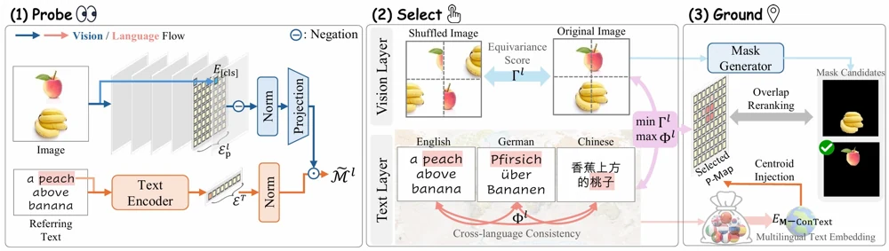
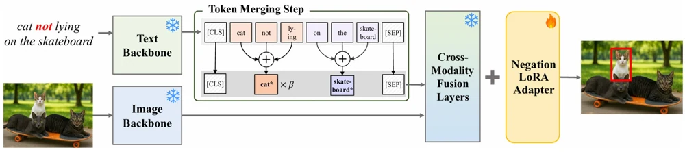
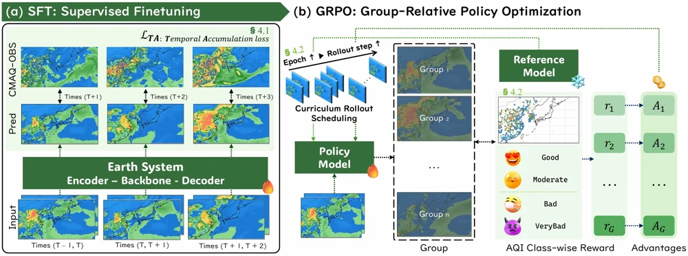
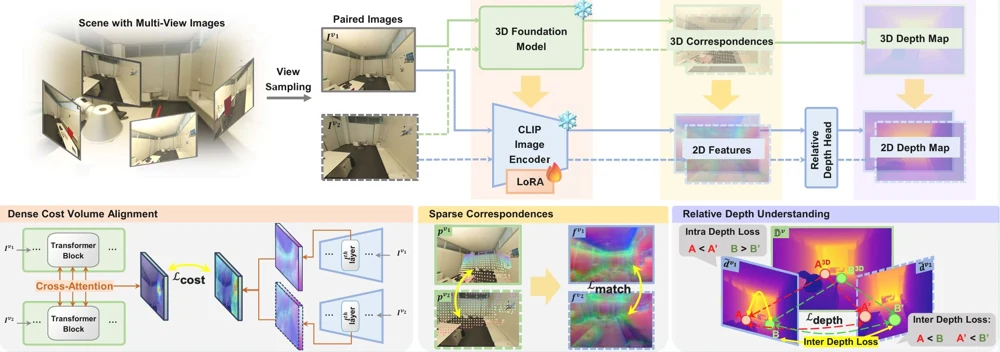

Qualcomm Innovation Fellowship Korea
Selected as a QIFK 2026 Finalist.
Drag the paper, or use arrow keys to move it. Press Enter to turn it over, and Home to reset its position.
AI RESEARCHER · SEOUL
A WORLD OF POSSIBILITIESA curious mind. An open world.
Making AI see, reason
& imagine what’s next.
Vision–language models. Physical intelligence. Agentic systems.
I turn model failures into new capabilities.
PLAY WITH MY WORLD
Try a button ↙Or tap the little camera. Every shot, a new color.
A small universe of things I’m curious about.
Selected as a QIFK 2026 Finalist.
Recognized as a Top Reviewer for main-track reviewing.
Joined as a research intern, working on LLMs and agentic tool use.
01 / SELECTED RESEARCH
From understanding what a model misses
to changing what it can do.

Co-first author

First author

First author

Co-author
Meet PLUME: direct multiday particulate forecasting with physically conditioned correction and ordered uncertainty over East Asia.
The public dataset brings together CMAQ reanalysis, gridded ground-station observations and trained model weights for studying air-quality forecasting.
Dataset released · Paper archive forthcoming
THE THREAD THROUGH MY WORK
I probe how vision-language models represent space, language and negation, then use those insights to improve grounding and reasoning.
I connect foundation models with physical dynamics, uncertainty and decision-aware objectives. My current work explores task-specific world models for multi-day forecasting.
At KRAFTON, I work on reliable agentic tool use: separating model errors from evaluation artifacts, curating training data and designing verifiable post-training tasks.
02 / THE PERSON BEHIND THE PAPERS
Across disciplines.
Close to the real world.
I’m Inha, a researcher who likes to understand why things fail—and build something better from there.
I’m a Ph.D. student at KAIST AI, advised by Prof. Hyunjung Shim in the Computer Vision and Machine Learning Lab, and a research intern at KRAFTON.
My path runs through 3D medical imaging, multimodal perception, vision-language reasoning and now agentic systems. Before my Ph.D., I spent two years at FaindersAI, building data pipelines and perception systems for real-world retail environments.
That mix shapes my approach: careful model analysis, better data, and research that carries through to working systems.
RESEARCH × ENGINEERING
Research Intern · LLMs & Agentic Systems
Benchmark and failure analysis, role-aware tool-use data curation, and executable RL tasks with state-based verification.
Deep Learning Researcher
VLM-based segmentation-data curation, continual learning, heterogeneous sensor fusion and real-time retail change detection.
Research Intern · Long-tailed object detection for autonomous driving.
Research Intern · Parallel computing and GPU acceleration.
CVML Lab · Prof. Hyunjung Shim · GPA 4.3/4.3
CGV Lab · Prof. Jinah Park
Salutatorian · Best Thesis Award
Minors in Business Administration and Sociology
Computer Science
03 / A FEW MILESTONES
Recognition for research, reproducibility
and contributions to the community.
Qualcomm Innovation Fellowship Korea
Main-track reviewing service
Compute Transparency Champion Award
2021 challenge · 2022 sample-level task
Also along the way Best Presentation Award, KTCP 2022 · Best Thesis Award, GIST 2020
Talk & patent Invited speaker, KOSMII 2022 · Data Collection Apparatus and Method, Korean patent publication No. 10-2025-0031529